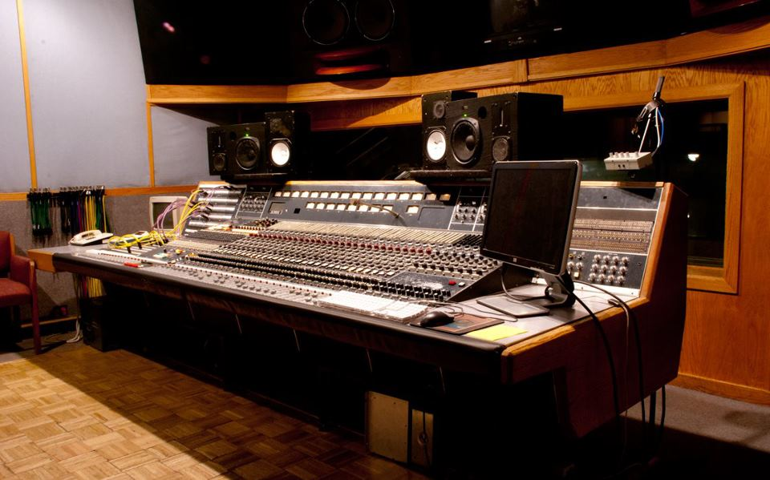

If you click on me, I will disappear.
I grew up in Indiana playing sports such as Baseball and Basketball. I discovered my love for music around the age of 16 and began playing Guitar, Bass, Keyboards, and Drums. After college at Indiana University, I attended audio school in Arizona and honed my skills in audio production. I landed a job as an assistant at Hyde Street Studios in San Francisco and loved every minute of it. From there, I moved to Colorado, where I have been doing live sound at music venues and running my own mobile recording service. Recently, I have been studying the basics of web development, which has led me to gSchool.
Here is a picture of the famed "Hyde Street Studios".  About my goals...